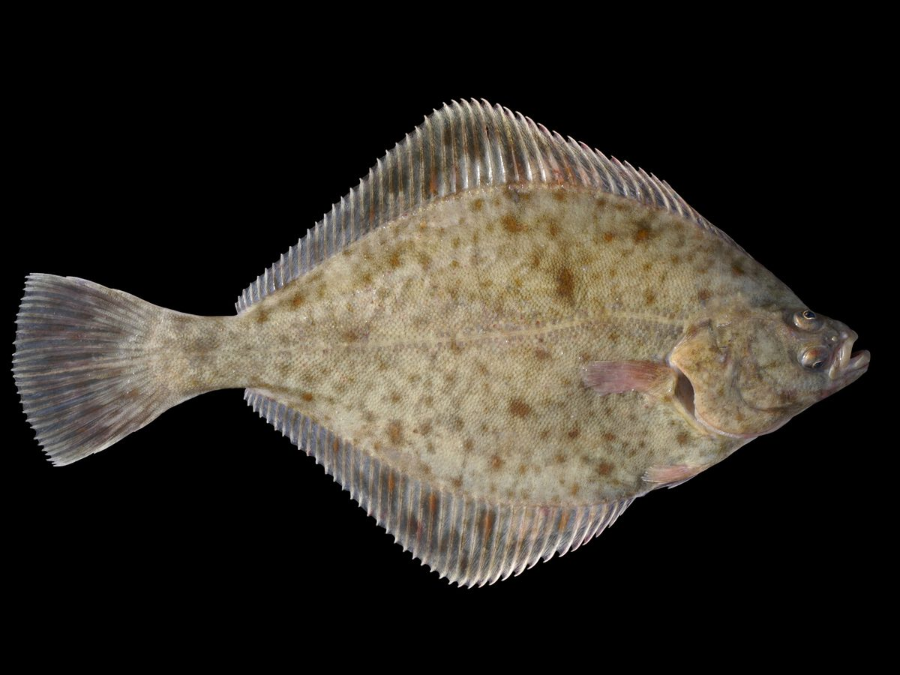

Uwaga taksonomiczna
Potoczna nazwa „flądra" nie przesądza identyfikacji gatunku. Ta karta opisuje stornię tradycyjnie ujmowaną jako Platichthys flesus; badania wyróżniają w Bałtyku także blisko spokrewnioną Platichthys solemdali, dlatego pewne oznaczenie lokalnego okazu może wymagać analizy cech diagnostycznych.
Biologia i rozpoznawanie
Wygląd i rozpoznawanie
Stornia to ryba o ciele silnie spłaszczonym bocznie i ustawionym „na płask” — leży na dnie na jednym boku, a oba oczy ma przesunięte na jedną, wierzchnią stronę ciała, najczęściej prawą (dominuje forma prawooczna). Strona oczna jest zwykle oliwkowobrązowa, szarozielona lub mulista, gęsto pokryta rozmytymi ciemnymi i rudawymi plamkami, dzięki którym ryba doskonale wtapia się w piaszczysto-muliste dno; strona ślepa jest biaława.
Charakterystyczne dla flądry są drobne, chropowate kostne guzki wyczuwalne palcami wzdłuż nasady płetwy grzbietowej i odbytowej oraz wzdłuż linii nabocznej — to najprostszy sposób odróżnienia jej od gładkiej gładzicy. Ciało otacza ciągła, falująca płetwa grzbietowa i odbytowa, a pysk jest niewielki, dostosowany do zbierania pokarmu z dna. Typowe okazy z Bałtyku mierzą 20–35 cm; większe, ponadkilogramowe sztuki zdarzają się, lecz są rzadsze. Młode flądry po metamorfozie wyglądają jeszcze symetrycznie, z okiem po obu stronach — dopiero z czasem jedno oko „wędruje” na drugą stronę głowy, a ryba kładzie się na dno.
Środowisko i występowanie w Polsce
Flądra jest w polskich wodach rybą stricte morską i przydenną, związaną z całym wybrzeżem Bałtyku — od plaż otwartego morza, przez zatoki, po porty, kanały i mola. Najchętniej przebywa nad dnem piaszczystym i piaszczysto-mulistym, na niewielkich głębokościach, często tuż za pierwszą lub drugą rewą, dokąd sięga zestawem rzuconym z plaży. Cechą wyróżniającą stornię wśród ryb płaskich jest wyjątkowa tolerancja na wysłodzenie: bez trudu wchodzi w ujścia rzek, do zalewów (Wiślany, Szczeciński) oraz w wody słonawe, a nawet wstępuje pewien dystans w dół rzek. Dzięki temu bywa spotykana tam, gdzie innych ryb morskich już nie ma — w portowych basenach, przy ujściowych kanałach i falochronach. Rozmieszczenie flądry zmienia się sezonowo wraz z jej wędrówkami między płytkim przybrzeżem a głębszą, bardziej zasoloną wodą, dlatego dostępność ryby z konkretnego mola czy plaży silnie zależy od pory roku i temperatury wody.
Biologia i tarło
Stornia jest rybą stosunkowo długowieczną i wolno rosnącą, a jej cykl życiowy w Bałtyku jest ściśle powiązany z zasoleniem. Tarło przypada na okres zimowo-wiosenny, orientacyjnie od lutego do maja, i odbywa się w głębszych, bardziej zasolonych partiach morza — flądry z wybrzeża podejmują wtedy wędrówkę tarłową ku wodom o wyższym zasoleniu, bo ikra do prawidłowego rozwoju wymaga odpowiedniej gęstości wody, w której może się unosić. To jedno z wąskich gardeł populacji bałtyckiej: w silnie wysłodzonych, wewnętrznych częściach morza rozród bywa utrudniony. Samica składa duże ilości drobnej, pelagicznej ikry, a wylęgłe larwy dryfują z prądami, początkowo pływając symetrycznie jak zwykłe ryby. Dopiero podczas metamorfozy następuje spektakularna przebudowa: jedno oko przemieszcza się na przeciwległą stronę głowy, czaszka ulega asymetrii, a młoda flądra opada na dno i przechodzi do przydennego trybu życia, który utrzyma już do końca życia.
Żerowanie w sezonach
Flądra żeruje przy dnie, wygrzebując i zbierając bezkręgowce: wieloszczety, drobne skorupiaki, mięczaki i larwy, a większe osobniki polują też na małe rybki i narybek. Jej aktywność wyraźnie zmienia się w rytmie roku. Wiosną, po tarle, ryby są wychudzone i dopiero wracają na przybrzeżne żerowiska, więc połów bywa nierówny. Lato to okres, gdy część flądr trzyma się płycizn, jednak przy wysokiej temperaturze i zakwitach potrafi być kapryśna i przesuwa się głębiej.
Prawdziwy szczyt przychodzi jesienią: od września do listopada storne intensywnie żerują, budując zapasy tłuszczu przed zimą i przed wędrówką tarłową, gromadząc się przy brzegu w zasięgu zestawu z plaży i mola — to klasyczny, najlepszy sezon „na flądrę”. Zimą ryby schodzą w głębszą wodę, lecz w cieplejsze, spokojne dni wciąż biorą, zwłaszcza z mol i pomostów sięgających poza strefę przyboju. Flądra żeruje o różnych porach doby, choć świt, zmierzch i lekko wzburzona, „mleczna” woda po sztormie często zwiększają liczbę brań.
Przepisy, metody i taktyka
Przepisy krajowe i zasady lokalne
Przepisy krajowe: Wody morskie: sprawdź aktualne zasady, limity i komunikaty GIRM przed połowem. Źródło: aktualne informacje GIRM
Przed połowem: sprawdź aktualny regulamin i zezwolenie dla konkretnej wody. Wymiar, okres, limit lub zakaz lokalny może być ostrzejszy; brak wartości krajowej nie oznacza zgody na zabranie ryby.
Metody i przynęty
Podstawową i zarazem najprostszą metodą jest łowienie gruntowe z brzegu na zestaw denny, najczęściej w wariancie paternoster: na przelotce lub krętliku zamocowany ciężarek (obciążnik gruntowy, przy prądzie i przyboju często z drucikami kotwiczącymi), a nad nim jeden do trzech przyponów z haczykami na krótkich stójkach, dzięki czemu przynęta faluje tuż nad dnem. Wędka to zwykle mocniejszy kij morski lub dłuższa wędka do dalekich rzutów, z kołowrotkiem naładowanym żyłką lub plecionką i strzałowym przyponem chroniącym przed zerwaniem przy zamachu.
Bezkonkurencyjną przynętą są robaki morskie: piaskówka oraz nereida (wieloszczety) — miękkie, intensywnie pachnące, nadziewane na haczyk pojedynczo lub „pęczkiem”. Sprawdzają się też skrawki ryby i inne drobne bezkręgowce dna. Storna ma niewielki pysk, więc rozsądne są haczyki średniej wielkości z długim trzonkiem, ułatwiające nadzianie robaka i wypięcie ryby. Sygnalizację brań daje szczytówka wędki lub dzwonek — flądra bierze charakterystycznie „skubiąc”, po czym kładzie się na przynęcie.
Taktyka łowienia
Kluczem do storni jest odczytanie dna i strefy przyboju. Z plaży celuj zestawem tuż za rewę i w rynny między łachami — to naturalne korytarze, którymi flądry patrolują brzeg w poszukiwaniu wypłukanego pokarmu; po sztormie, gdy woda jest lekko zmącona i pełna wybitych z dna robaków, brania potrafią być wyjątkowo dobre. Jeśli po kilkunastu minutach nie ma kontaktu, przerzucaj zestaw na różne odległości, „skanując” kolejne pasy dna, zamiast biernie czekać.
Z mola i pomostu masz przewagę zasięgu i możesz obławiać głębszą wodę oraz krawędzie toru wodnego, gdzie ryby trzymają się chłodniejszą porą. Warto łowić dwiema wędkami na różnych dystansach i z różną przynętą, by szybko ustalić, gdzie i na co ryba dziś bierze. Osobny, wdzięczny kierunek to wejścia w wysłodzone ujścia rzek i zalewy — tam flądra bywa liczna, a łowienie spokojniejsze niż w przyboju. Delikatne, powolne „ściąganie” zestawu po dnie co jakiś czas prowokuje dodatkowe brania. To wędkarstwo cierpliwe i tanie w wejściu, dlatego tak lubiane przez początkujących nad morzem.
Wartość kulinarna
Flądra to jedna z najsmaczniejszych ryb, jakie można złowić z polskiego brzegu, i filar nadmorskiej kuchni smażalnianej. Mięso jest białe, delikatne, o łagodnym smaku i stosunkowo niewielkiej liczbie ości, co czyni ją przyjazną nawet dla osób, które ryb zwykle unikają. Klasyka to flądra smażona w całości, panierowana w mące i podana z chrupiącą skórką — właśnie w tej postaci króluje w przymorskich smażalniach. Świeżość ma tu ogromne znaczenie: rybę najlepiej sprawić szybko i schłodzić, bo delikatne mięso storni psuje się prędzej niż u ryb tłustych. Poza smażeniem sprawdza się pieczenie w całości, grillowanie oraz przygotowanie na parze z ziołami i cytryną. Większe okazy można filetować, choć spłaszczona budowa ciała sprawia, że filety są cienkie i wymagają wprawy. Warto pamiętać o rozsądku: bierz z wody tylko tyle, ile realnie zjesz, a mniejsze ryby wypuszczaj, dbając o kondycję lokalnej populacji.
Ciekawostki
Storna jest rekordzistką wśród ryb płaskich pod względem tolerancji na wysłodzenie — jako jedyna z bałtyckich fląder tak śmiało wchodzi w ujścia rzek i słonawe zalewy, dlatego to właśnie ją najczęściej łowi się w miejscach, gdzie słona woda miesza się ze słodką. Asymetria jej ciała nie jest wrodzona: larwa wygląda jak zwykła, symetryczna ryba i dopiero podczas metamorfozy jedno oko przemieszcza się na drugą stronę głowy.
Choć u storni dominuje forma prawooczna, zdarzają się osobniki „leworęczne”, z oczami po lewej stronie. Flądra potrafi też zmieniać intensywność ubarwienia strony ocznej, dopasowując się do koloru dna niczym kameleon. W miejscach, gdzie zasięgi gatunków się nakładają, stornia krzyżuje się z gładzicą, dając mieszańce o cechach pośrednich, co bywa źródłem kłopotów przy rozpoznawaniu. Dla wielu wędkarzy pierwsza w życiu ryba morska to właśnie flądra złowiona z plaży — i niejednego ten prosty połów na stałe „zaraził” morzem.
FAQ — najczęstsze pytania
Kiedy jest najlepszy sezon na flądrę?
Zdecydowanie jesień — orientacyjnie od września do listopada storne żerują najintensywniej, gromadząc się przy brzegu w zasięgu zestawu z plaży i mola, by zbudować zapasy przed zimą i wędrówką tarłową. To klasyczny szczyt „na flądrę”, gdy nawet początkujący ma realną szansę na rybę. Wiosną, po tarle, połów bywa nierówny, latem flądra potrafi być kapryśna i schodzić głębiej, a zimą trzyma się głębszej wody, choć z mol sięgających poza przybój wciąż daje brania w cieplejsze, spokojne dni. Dobrym momentem jest też okres tuż po sztormie, gdy lekko zmącona woda pełna jest wypłukanych z dna robaków.
Na co i jak łowić flądrę z brzegu?
Najprościej i najskuteczniej — na zestaw gruntowy typu paternoster: ciężarek na dole utrzymuje zestaw przy dnie, a jeden do trzech krótkich przyponów z haczykami prezentuje przynętę tuż nad podłożem. Wędką sięga się za rewę i w rynny między łachami. Bezkonkurencyjną przynętą są morskie robaki: piaskówka i nereida, miękkie i intensywnie pachnące, nadziewane na haczyk średniej wielkości z długim trzonkiem. Brania sygnalizuje szczytówka wędki lub dzwonek; flądra charakterystycznie skubie, a potem kładzie się na przynęcie, więc z zacięciem nie trzeba się spieszyć. To tania i cierpliwa metoda, idealna na start nad morzem, z plaży, mola albo w wysłodzonym ujściu rzeki.
Czym flądra różni się od gładzicy?
Najpewniejszym rozróżnieniem jest dotyk: stornia ma wzdłuż nasady płetwy grzbietowej i odbytowej oraz wzdłuż linii nabocznej drobne, chropowate kostne guzki, wyczuwalne pod palcami, podczas gdy gładzica jest w tych miejscach gładka (stąd jej nazwa), a wyróżniają ją rzędy wyraźnych, pomarańczowych plam na stronie ocznej. Ubarwienie flądry jest zwykle bardziej mulisto-brązowe i rozmyte, dopasowane do piaszczysto-mulistego dna. Trzeba jednak uczciwie zaznaczyć, że oba gatunki bywają do siebie podobne, a tam, gdzie ich zasięgi się nakładają, spotyka się mieszańce o cechach pośrednich, które trudno jednoznacznie zaklasyfikować. W razie wątpliwości oceniaj zestaw cech, a nie pojedynczy szczegół.
Czy flądrę można łowić na te same zasady co ryby w rzece?
Nie — i to ważne. Flądra jest rybą morską, więc jej połów podlega przepisom o rybołówstwie morskim ustalanym przez administrację morską, a nie regulaminowi amatorskiego połowu ryb PZW, który obowiązuje na wodach śródlądowych. Oznacza to inne zasady, ewentualne wymiary ochronne, limity czy wymogi rejestracyjne, zwłaszcza przy łowieniu z jednostki pływającej. Dodatkowo, wchodząc ze storniami w ujścia rzek i zalewy, można znaleźć się na granicy wód morskich i śródlądowych o różnych reżimach prawnych. Dlatego przed wyjazdem sprawdź aktualne przepisy u administracji morskiej, a dla odcinków granicznych i śródlądowych — na pzw.org.pl i w regulaminie właściwego okręgu. Podchodź do tego jak do obowiązku, nie formalności.
Źródła i weryfikacja
Materiał ma charakter przeglądowy i edukacyjny. Flądra (stornia) jest rybą morską, dlatego jej połów podlega przepisom o rybołówstwie morskim, a nie regulaminowi PZW dla wód śródlądowych — ewentualne wymiary ochronne, limity i wymogi rejestracyjne podano wyłącznie orientacyjnie na dzień publikacji. Przed połowem zweryfikuj aktualne przepisy dotyczące amatorskiego połowu ryb w polskich obszarach morskich u właściwej administracji morskiej, a dla ujść rzek, zalewów i odcinków granicznych — regulamin właściwego okręgu PZW oraz komunikaty na pzw.org.pl. Artykuł nie gwarantuje wyników połowu. Zobacz też: wędkarstwo morskie — techniki połowu w Bałtyku.
Tożsamość biologiczna i źródła
Nazwa łacińska: Platichthys flesus. Grupa atlasu: morskie. Alias: stornia, flądra.
Źródła: FishBase: Platichthys flesusGBIF: Platichthys flesusIUCN Red List: Platichthys flesus. Dostęp: 2026-07-17. Zakres: tożsamość taksonomiczna i nazewnictwo oraz, gdy wskazano, ocena ochrony; bez potwierdzenia lokalnego występowania, stanu łowiska ani zasad połowu.
Porównanie taksonomiczne
Porównaj z kartą Dorsz atlantycki. Obie karty prowadzą do osobnych rekordów źródłowych; porównanie nie jest kluczem oznaczania w terenie ani gwarancją wyniku połowu.